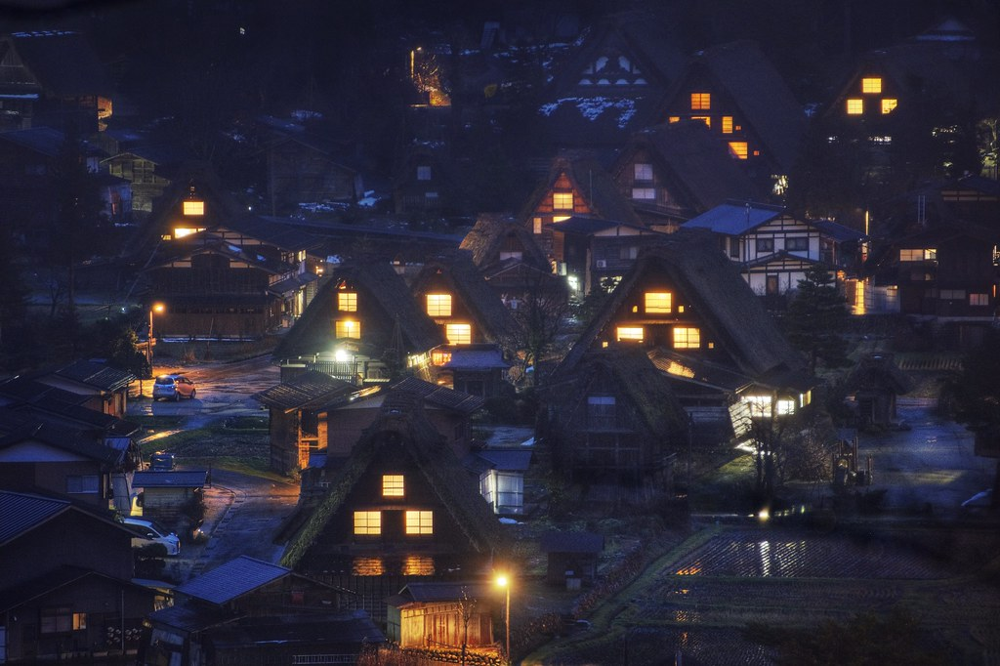

North East Island City is located in an alternative world in the same timeline as ours but with a twist. The history in this world is nothing like ours, you could say is the complete opposite. From the heavens down it may look the same but immediately you will notice how dark it is. It's a world where sunlight is cut short; this is all due to an event known as “The Day Of Night”. On that day everything changed, the sun that would give life blew up in pieces. Flames came down from the heavens destroying parts of the earth and leaving in remains this new world. All that was left was a world destroyed, and the sun shattered in the distance. In this new world the sun only has the power to give light for a few hours. The world had to rebuild itself, different nations came to power and built the world of today above the remains of what it used to be. Technology and knowledge of the old remained. In the location of our character, fear is part of life,darkness is normal, and survival is tomorrow. A dark and afraid place. This is where our story begins, after the event of “The Day Of Night”. Strange things began to happen to the land and living things. The genesis of humans with powers and new threats. Or as they like to call it “ The Anomaly”.
